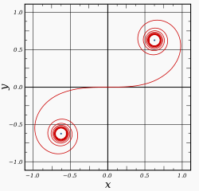
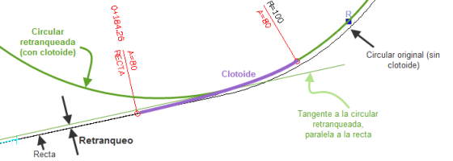
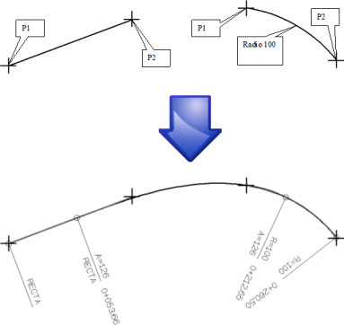
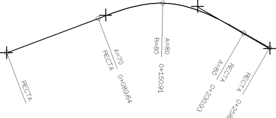
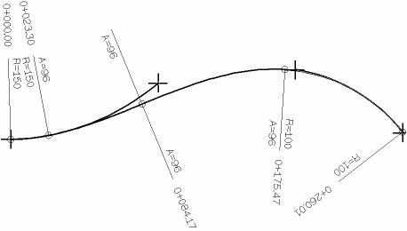
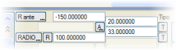
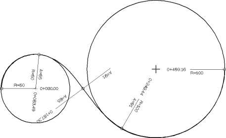

| |
|
YATAY GÜZERGAH: BİRLEŞİM VEYA GEÇİŞ EĞRİLERİ
|
|
Genel Bilgiler İki ana güzergah elemanı (doğrular veya dairesel kurplar) arasına genellikle, eğriliğin kademeli bir geçişini sağlayan bir spiral eğri eklenir. Genellikle, doğrusal yapı projelerinde Cornu spirali (klotoid olarak bilinir) kullanılır, ancak yarım sinüs dalgası (half sine wave), kübik spiral ve kübik parabol gibi başka eğriler de mevcuttur (kullanılacak geçiş eğrisi tipi GENEL sekmesinden seçilmelidir, ancak program varsayılan olarak klotoid ile çalışır). Klotoid eğrisinin ana özelliği, herhangi bir noktadaki eğriliğinin, başlangıçtan ölçülen eğri boyunca orantılı olmasıdır, bu da şu formülle ifade edilir: R × L = A2
burada: R, klotoid yayının bir noktasındaki eğrilik yarıçapıdır.
L, o noktaya kadar olan klotoid yayının gelişimidir. A, klotoidin sabitidir. Ortaya çıkabilecek geometrik senaryolar dörttür:
Kaydırma (Öteleme) Eğer başlangıçtaki bir tasarımda doğru ve dairesel kurp teğet ise, ya dairesel kurp "içeriye doğru hareket ettirilmeli" ya da aynı nedenle doğru "dışarıya doğru hareket ettirilmelidir", yani bir geçiş eğrisinin eklenmesi, doğru ile dairesel kurp arasında bir kaydırma olmasını gerektirir. Böylece, kaydırma, doğru ile, aralarında bir klotoid olduğunda dairesel kurba teğet olan doğruya paralel çizgi arasındaki mesafe olarak tanımlanır: 
İki dairesel kurp durumunda, kaydırma, büyük yarıçaplı daire ile küçük yarıçaplıya teğet olan eş merkezli daire arasındaki mesafedir. Geçiş Eğrilerinin Tanımlanması ve Hesaplanması İki ana güzergah elemanının serbestlik dereceleri, kaydırmayı sağlamak için birinin hareketine izin vermelidir. Eğer iki eleman arasında serbestlik derecesi yoksa (örneğin, ardışık iki sabit veya sabit+geriye döner), teğetlik sorununu çözen klotoid tektir ve program tarafından hesaplanır, böylece kullanıcı tarafından bildirilen klotoid parametreleri göz ardı edilir. Buna karşılık, iki ana eleman arasında bir serbestlik derecesi varsa, geçiş eğrisinin eklenmesi, kullanıcı tarafından bildirilen teğet spiralin eklenebilmesi için o serbestlik derecesine sahip elemanın kaydırılmasıyla yapılır. İki çözümün olduğu bazı özel durumlarda (örneğin, iki sabit doğru arasında some klotoidi), dönüş yönünü işaretle belirtmek gerekir; sağa kurplar için pozitif ve sola kurplar için negatif. Serbestlik Derecesi Olmayan Elemanlar Arası Geçiş SABİT DOĞRU VE DAİRESEL KURP Varsa, çözüm klotoidi tektir ve parametre program tarafından hesaplanır. Aşağıdaki örnek, ilki doğru ve ikincisi 100 yarıçaplı olmak üzere iki iki nokta ile sabit güzergah elemanından oluşur. Hesaplamadan sonra, program süreklilik ve teğetlik çözümü olarak A parametresi 126'ya yakın bir klotoid eğrisi bulur (etiketleme bu parametreyi en yakın tam sayıya yuvarlanmış olarak gösterir): 
İKİ SABİT DOĞRU Some klotoidinin parametresinin her değeri için bir çözüm vardır ve somedeki yarıçap program tarafından hesaplanır. Aşağıdaki örnek, iki iki nokta ile sabit doğru elemanından oluşur: 
 İki sabit doğru durumunda, bir some klotoidi ile birleştirmek için, somede sahip olacağı yarıçapı girmeye olanak tanıyan bir alan etkinleştirilir (Rsome). Ayrıca, [R] düğmesini sırasıyla [A] veya [L]'ye değiştirerek, her iki klotoid kolunun iki parametresini veya her kolun uzunluğunu belirtmek de mümkündür. Dolayısıyla, ISTRAM®/ISPOL®, some klotoidlerini üç farklı şekilde tanımlamayı sağlar. İki sabit doğru durumunda, bir some klotoidi ile birleştirmek için, somede sahip olacağı yarıçapı girmeye olanak tanıyan bir alan etkinleştirilir (Rsome). Ayrıca, [R] düğmesini sırasıyla [A] veya [L]'ye değiştirerek, her iki klotoid kolunun iki parametresini veya her kolun uzunluğunu belirtmek de mümkündür. Dolayısıyla, ISTRAM®/ISPOL®, some klotoidlerini üç farklı şekilde tanımlamayı sağlar.Bu durumda, iki geometrik çözümün varlığı nedeniyle dönüş yönünü belirtmek için işareti kullanmak anlamlı olabilir. AYNI YÖNE DÖNEN İKİ SABİT DAİRESEL KURP Programın hesapladığı (geometrik çözüm varsa) ve aşağıdaki örnekte olduğu gibi ekranda gösterdiği tek bir klotoid çözümü (C kurpu) vardır. Bu örnek, aynı işaretli yarıçaplara sahip iki iki nokta ile sabit güzergah elemanından oluşur: Bu durumun bir çözümü olması için, daireler birbirinin içinde olmalıdır. TERS YÖNDE DÖNEN İKİ SABİT DAİRESEL KURP Çözüm bir S klotoididir. Bu durumda, iki kolun parametreleri arasındaki ilişki bildirilebilir, öyle ki hesaplayıcı aralarındaki ilişkiye uyar ancak mutlak değere değil. Daireler dışta olmalıdır. Aşağıdaki örnek, ilki -150 yarıçaplı ve ikincisi 100 yarıçaplı olmak üzere iki iki nokta ile sabit güzergah elemanından oluşur. Her iki klotoid kolu için A=0 parametresi bırakılmıştır, böylece her biri için aynı parametre elde edilir: 
Ancak, örneğin, birinci kol için A=20 ve ikinci için A=33 belirtilmiş olsaydı, o zaman birinci kol için hesaplanan parametre, ikinci için hesaplanan parametreden 20/33 kat daha küçük olurdu. Eğer elemanlar iki nokta yerine merkez ve yarıçap ile sabit dairesel olsaydı, çözüm benzer olurdu ve bu durumda da klotoid kolları arasında bir ilişki belirtilebilirdi: 
Bir Serbestlik Derecesine Sahip Elemanlar Arası Geçiş Bu durumda, geçiş eğrisini tanımlayan parametreyi kullanıcının bildirmesi gerekir.  Klotoidleri tanımlamak için değerler, A parametreleri veya L uzunlukları olabilir ve ayrıca, some klotoidleri durumunda, R somesi de olabilir. A ve L arasında geçiş yapıldığında, gösterilen değer sırasıyla klotoid parametresi veya uzunluğudur. Klotoidleri tanımlamak için değerler, A parametreleri veya L uzunlukları olabilir ve ayrıca, some klotoidleri durumunda, R somesi de olabilir. A ve L arasında geçiş yapıldığında, gösterilen değer sırasıyla klotoid parametresi veya uzunluğudur.Uzunlukla tanımlanmış bir klotoidden sonra başka bir güzergah elemanı eklenirse, ondan önceki klotoidin alanı otomatik olarak [L]'ye ayarlanır. Bir klotoid uzunlukla tanımlandığında, [T] yönetmelik düğmelerinin önerdiği değerler uzunluk olacaktır. Eğer A parametresi, ana elemanın yarıçapının 5 katından büyükse, hesaplayıcı hassasiyet hatalarını önlemek için klotoidi iptal eder. |